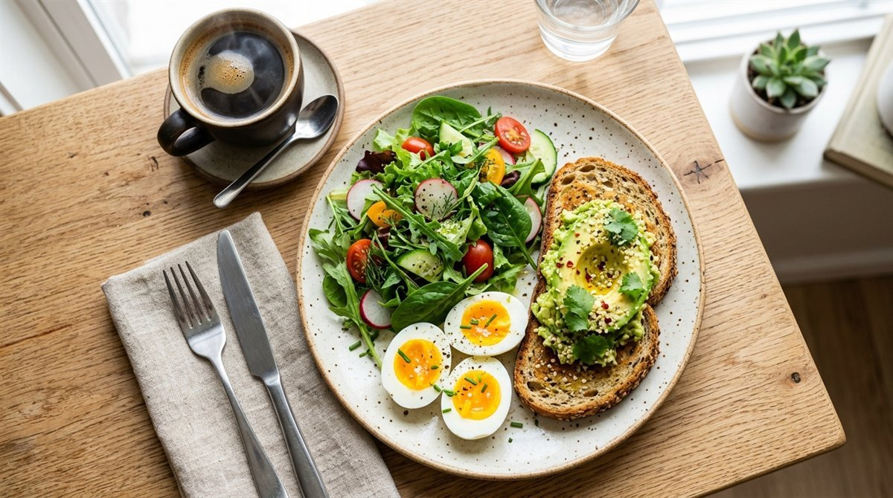

기상 직후 맞이하는 '골든 아워 1시간'을 어떻게 보내느냐에 따라 그날 하루의 기초대사율, 체지방 연소 속도, 그리고 오후 식곤증과 야식 갈망 여부가 결정됩니다.
많은 분들이 체지방을 태우기 위해 아침 공복 유산소를 선택하지만, 잘못된 강도로 무리하게 뛰거나 운동 직후 정제 탄수화물을 섭취하면 근손실과 함께 극심한 '혈당 스파이크(Glucose Spike)'를 겪게 됩니다.
근육은 지키고 지방만 쏙 태우는 Zone 2 공복 유산소 3대 황금 수칙부터 운동 후 최적의 첫 식사 타이밍, 혈당 스파이크를 원천 차단하는 거꾸로 식사법(채·단·탄)과 5대 모닝 루틴을 완벽히 정리해 드립니다.
1. 체지방 태우고 근손실 막는 공복 유산소 3대 황금 수칙
밤사이 8시간 단식 후 기상했을 때 우리 몸은 간에 저장된 글리코겐이 약 70% 이상 소진된 상태입니다.
이때 유산소 운동을 수행하면 탄수화물 대신 체내 피하지방과 내장지방을 주요 연료로 끌어다 쓰는 비율이 평소보다 약 20~30% 증가합니다.
하지만 심박수가 지나치게 올라가는 고강도 인터벌 러닝을 하면 부족한 에너지를 보충하기 위해 근육 단백질을 아미노산으로 분해하는 '당원신생(Gluconeogenesis)'이 활성화되어 소중한 근육이 분해됩니다.
따라서 다음 3대 수칙을 철저히 준수해야 합니다.
2. 운동 직후 '기회의 창'과 이상적인 첫 식사 타이밍
공복 운동이 끝난 직후 우리 몸은 지방 연소 효율이 가장 높은 '애프터번(Afterburn)' 상태를 유지하고 있습니다.
운동이 끝나자마자 급하게 음식을 섭취하기보다는 운동 종료 후 약 30분~1시간 뒤에 첫 식사를 하는 것이 가장 이상적입니다.
이 30분 동안 상승했던 코르티솔과 아드레날린 수치가 서서히 안정되며 부교감 신경이 활성화되어, 섭취한 영양소가 지방으로 축적되지 않고 근육 글리코겐으로 빠르게 회복됩니다.

3. 혈당 스파이크를 원천 차단하는 거꾸로 식사법(채·단·탄)
공복 상태의 위장에 식빵, 흰 쌀죽, 떡, 과일 주스 같은 정제 탄수화물이 가장 먼저 들어가면 혈당이 롤러코스터처럼 치솟았다가 급락하는 '혈당 스파이크'가 발생합니다.
이로 인해 인슐린이 과다 분비되어 지방 축적이 가속화되고, 오전 11시경 심한 졸음과 허기가 찾아옵니다.
4. 아침 공복 운동 vs 식후 운동 생리학적 비교표
자신의 건강 목표와 체질에 맞게 아침 공복 운동과 식후 운동의 특성을 비교 분석한 데이터입니다.
| 비교 항목 | 아침 공복 유산소 | 식후 유산소 / 근력 운동 |
|---|---|---|
| 주요 에너지원 | 체지방 (지방 연소율 최대 30% 증가) | 섭취한 탄수화물 (혈당 및 글리코겐) |
| 추천 운동 강도 | 중저강도 (Zone 2, 걷기·조깅) | 중고강도 (웨이트 트레이닝·인터벌) |
| 근손실 위험도 | 40분 초과 시 다소 높음 | 매우 낮음 (근육 합성 최적화) |
| 주요 권장 대상 | 체지방 감량 · 내장지방 감소 희망자 | 근육량 증가(벌크업) · 고강도 운동자 |
| 혈당 조절 기전 | 인슐린 감수성 개선 | 식후 급격한 혈당 스파이크 직접 강하 |
5. 혈당과 활력을 깨우는 모닝 웰니스 5대 체크리스트
아침 시간을 건강의 강력한 무기로 바꾸는 5가지 데일리 실천 수칙입니다.
밤새 끈적해진 혈액을 묽게 만들고 신진대사 스위치를 켜 소화기를 깨웁니다.
수면 호르몬을 끄고 세로토닌 합성을 촉진하여 하루의 긍정 에너지를 채웁니다.
무리한 전력 질주 대신 편안한 호흡으로 체지방을 연소하고 뇌를 각성시킵니다.
첫 끼니에 달걀 2개, 두부, 그릭요거트로 근육 합성 아미노산을 충분히 공급합니다.
식사 후 바로 앉지 않고 10분간 걸으면 허벅지 근육이 혈당을 즉각 흡수합니다.
자주 묻는 질문 (FAQ)
* 대한비만학회(KSSO) 비만 진료지침 (공복 운동 및 대사 조절)

독자 댓글 (0)